朝花夕拾
证明:若质量为的三质点形成稳定转动形态后(均做圆周运动,周期相同),若三者不共线,则形成正三角形.
以质心为中心,换转动系,则静止.
引入惯性离心力:
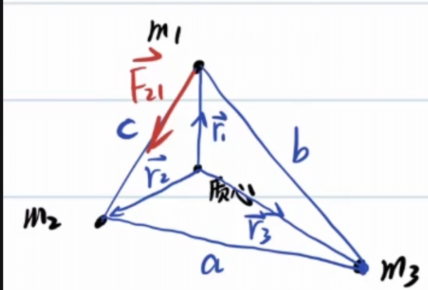
又因为不共线,只能有:
得到,同理,则三者构成的图形是正三角形.
本节由 Claude（Anthropic 开发的 AI 模型）补充，附在作者解答之后，并非原作者所写。
勘误（Claude 补充） 推导中间两行有笔误，最终方程和结论都是对的：
- 应为 （ 应为 ；分母本行写成 ，下一行又写成 ）；方程组第一式中的第二项也应是 。
- 质心条件应为 ，原式多了一个负号。
按更正后的式子代入，，正好得到文中最后一行。
另外补充一句：正三角形构型的 L4、L5 只有在主次两天体质量比大于约 时才稳定（日–地、地–月都满足）。
顺便得到:
此问题正是著名的拉格朗日点问题
本文推导的正三角形解对应 L4、L5 两个稳定拉格朗日点。
另外三个共线点 L1、L2、L3 由三体共线平衡条件（欧拉解）给出，
需对两大天体连线上的合力方程单独求解。
五个拉格朗日点合称欧拉-拉格朗日点。
附上一道练习题:
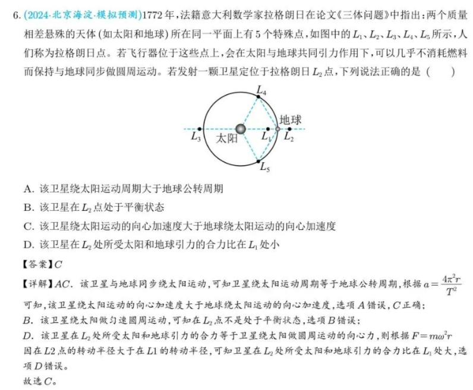
一:轨道
椭圆
椭圆第一定义
对于椭圆的一根焦点弦,焦点把焦点弦分为长度为两部分,有:
过椭圆内一点做出三条弦,分别交椭圆与六个点,这六个点顺次连接,相邻点的距离分别为,有:
本节由 Claude（Anthropic 开发的 AI 模型）补充，附在作者解答之后，并非原作者所写。
勘误（Claude 补充） 对圆成立（由相交弦定理可得相邻三角形相似，三组相似比相乘），但对一般椭圆不成立。数值反例：椭圆 ，过焦点 作倾角为 弧度的三条弦，算得 ，。仿射变换会把椭圆变成圆，但不保持不同方向线段的长度比，所以圆的结论不能直接搬到椭圆上。
椭圆的光学性质
在椭圆的一个焦点,发出一条光线,光线在椭圆上反射后的光线经过另一个焦点.

椭圆顶点的曲率半径
这个在微积分基础中已经证明.
长轴:,短轴:
计算方法:
其中:为速度,为法向加速度.
可以构造一个运动,在天体运动:万有引力定律我们已经研究过长轴处的速度情况,故考虑行星绕天体的运动.
在近日点(长轴顶点)处:
在短轴顶点处:
常见的与椭圆参量相关的物理量:
椭圆的直角坐标方程:
极坐标方程:,其中p称为焦半径.
本节由 Claude（Anthropic 开发的 AI 模型）补充，附在作者解答之后，并非原作者所写。
更正（Claude 补充） 通常称为半通径（semi-latus rectum，即过焦点且垂直于长轴的弦长的一半）；"焦半径"一般指曲线上一点到焦点的距离 本身。下文"焦半径 "中的 也是半通径。
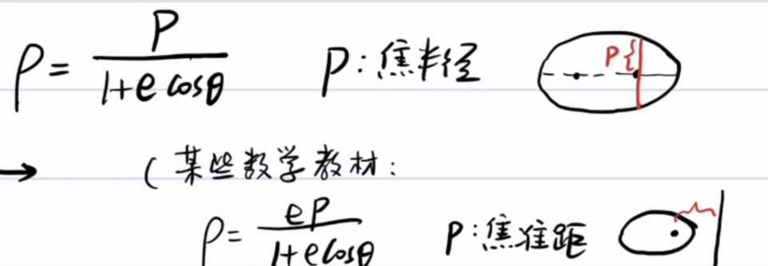
事实上,这一参数方程亦适用于其他圆锥曲线.
小试牛刀(椭圆的光学性质)
(28届复赛第一题:节选)
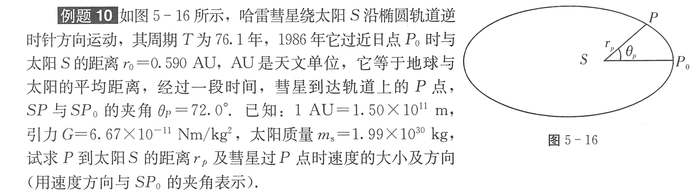
科普一下天文单位:
天文单位（Astronomical unit, AU）是天文学中计量天体之间距离的一种长度单位，在数值上等于地球和太阳之间的平均距离，现定义为149597870.7公里。 它也可以被认为是地球公转轨道的半长轴长度，即地球绕太阳椭圆轨道最大直径的一半的长度。
首先利用回归周期计算半长轴:
紧接着,我们利用求出:
标出椭圆的另一焦点Z.做出的角平分线.
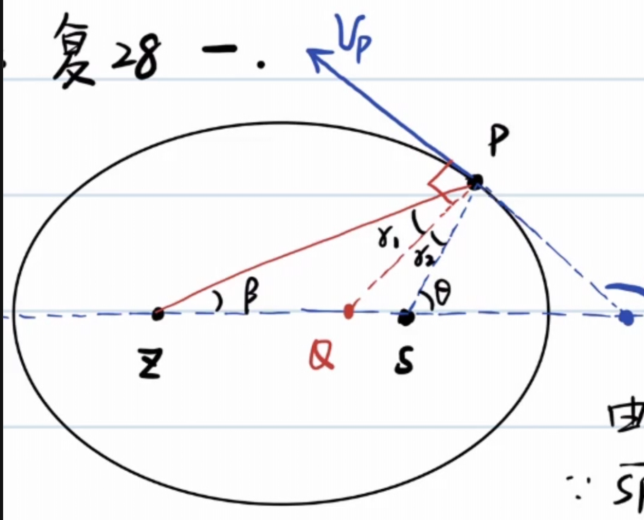
根据椭圆的光学性质,垂直于角平分线.
在中使用正弦定理:
对于速度方向,我们还可以通过切线斜率求出:
我们已经解决了P到太阳的距离及速度方向,该解决速度大小了:
完结,撒花.
这里呈上质心标答:


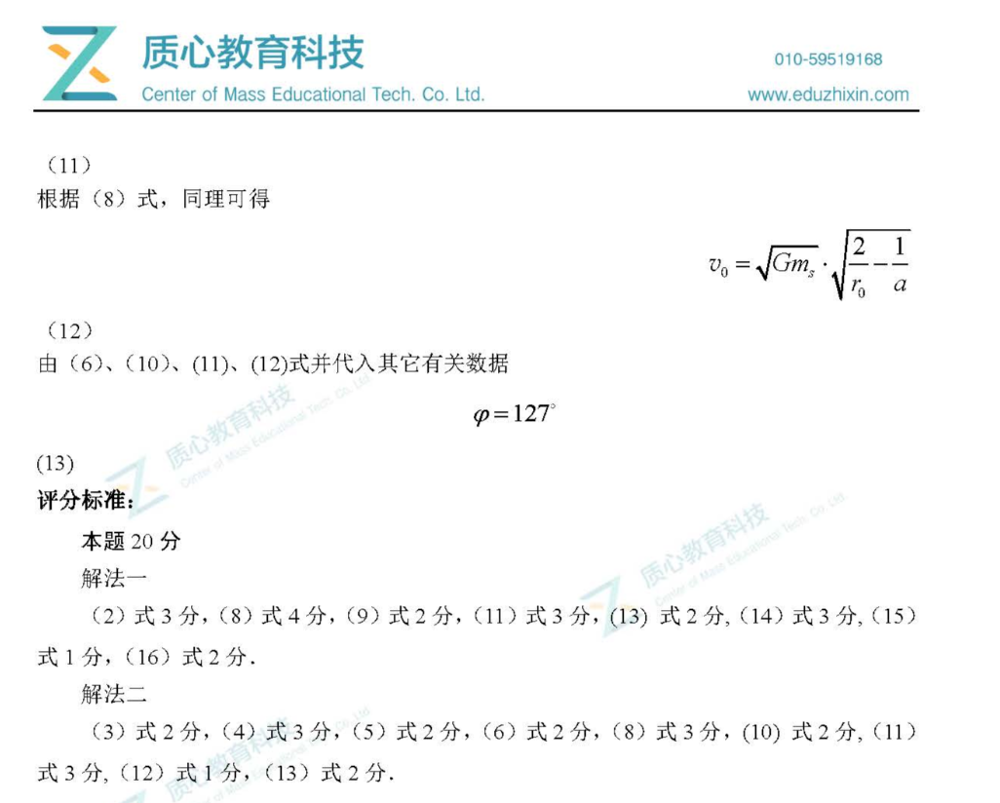
椭圆轨道比较
对于半长轴不变的轨道,它们的机械能都等于
不难看出,这些轨道的极端情况是接近直线和接近正圆.
角动量,在轨道接近直线时,在轨道接近正圆时,L变大.
所以,
对于角动量不变的轨道,显然半长轴越大,机械能越大,相应必须增大.
容易证明,焦半径为一定值.

抛物线轨道
在以太阳为原点的日心坐标系中，地球绕太阳做匀速圆周运动，轨道半径为 ，周期 。
一颗彗星沿抛物线轨道掠过太阳系，其机械能 ，太阳位于该抛物线的焦点。彗星的近日点 位于 轴正方向，到太阳的距离为 （即近日距 ）。该抛物线轨道与地球圆轨道相交于 、 两点，二者位于 轴上，坐标为 、。
求： 彗星沿抛物线由 经近日点 到 所经历的时间 。
由图可知,
显然抛物线方程为
也就是说,
分析一下地球运动周期:
借助彗星扫过的面积和面积速度,可以求出运动时间:
位力定理
位力定理（英语：Virial theorem，又称维里定理、均功定理）是[力学]中描述稳定的多自由度孤立体系的总动能和总势能时间平均之间的数学关系。
基本表达式
考虑一个有 个质点的体系，其数学表达式为：
其中：
- 角括号 表示对时间取平均；
- 是系统内部的总动能；
- 是第 个质点所受的合力；
- 是第 个质点的位置向量；
- 等式右边称作均位力积（virial），反映体系内相互作用强度。
英语 virial 一词由德国物理学家鲁道夫·克劳修斯于 1870 年根据拉丁语单词 vīs（意为力、能量）命名。
幂次势下的简化形式
若系统内任意两粒子之间的力来自与粒子间距 的 次幂成正比的势能
则定理简化为：
即体系总动能的 2 倍等于总势能的 倍。
| 势能类型 | | 结论 |
|---|
| 引力 / 库仑势 | | |
| 谐振子势 | | |
意义与适用范围
位力定理的重要意义在于，它允许计算平均总动能，即便对于那些无法精确求解的复杂系统（例如统计力学中考虑的多体系统）也同样适用。
- 根据能量均分定理，平均总动能与系统温度相关；
- 然而位力定理不依赖温度概念，甚至适用于不处于热平衡的系统；
- 该定理已被推广至多种形式，特别是张量形式。
特别的,对于稳定的多体运动,若各质点相对位置不变,则系统总动能和总势能不变,恒有:
简单证明
设n个质量相同的质点组成正n边形,稳定地做半径为的匀速圆周运动.
每个质点受到的向心力
使用虚功原理,让每个质点沿着径向方向移动.
二:潮汐
 潮汐的本质是引力差,地球半径造成的月球引力变化不可忽略.
潮汐的本质是引力差,地球半径造成的月球引力变化不可忽略.
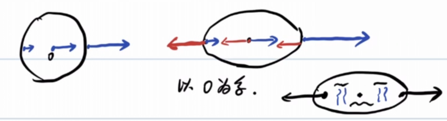
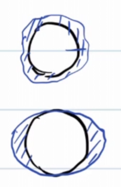
把水额外拉高的力,称为引潮力.
以地球质心为惯性系,这样地球各点受到与质心所受引力相同的惯性力.
设月(m)onth地距离为,地球半径为
同理
审视一下计算结果，被吸引物体越大，引潮力越大，更容易被撕裂。
当天体靠近大质量中心体近到某个临界距离时，中心体对该天体的引潮力将超过天体 自身的自引力，天体就会被撕碎，这一临界距离称为洛希极限：
事实上,上面把卫星当作无形变的刚体质点，忽略了两个效应：
卫星本身因引潮力被拉伸变形（椭球化），增大了近端距离，自引力减弱； 卫星绕轨道运动的离心效应。
修正系数后得到:
大卫星和小卫星在同一轨道上受到的引潮力虽然不同（大的更强），但大卫星的自引力也按同样比例增大，两者恰好抵消，洛希极限与卫星尺寸无关。
本节由 Claude（Anthropic 开发的 AI 模型）补充，附在作者解答之后，并非原作者所写。
更正（Claude 补充） 上面推导中的 是卫星的半径， 是卫星质量， 是中心天体质量。由 得到
（原式把下标写成了 、）。若用中心天体半径 表示，则 ，常见写法为
所以 这个写法有误：配 时要用密度比；用质量比时前面要乘卫星半径。这样写也能直接看出"与卫星尺寸无关"，因为 只依赖于密度。
土星环正是卫星或彗星越过洛希极限后被潮汐力撕裂、散布成碎片环的遗迹。
在《星际穿越》中展示了这一点：主角团登陆的米勒星球极度靠近超大质量黑洞 卡冈图雅，强烈的引潮力在星球海洋上激起数十米高的周期性巨浪； 而库珀驾驶飞船贴近黑洞时，飞船恰好处于洛希极限之外—— 一旦越过，引潮力将直接将飞船撕碎。(Sonnet 4.6告诉我的,我本人没有看过)
不难算出,太阳对地球的引潮力小于月球造成的引潮力.
在一个月内,大概在初一/十五有两次大潮(太阳,月球,地球共线)
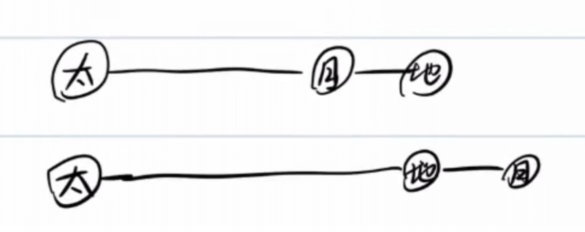
上初一,下十五小潮:,太阳和月亮对地球形成的引潮力正交,效果上相互抵消
直观感受潮汐:
圣米歇尔山涨退潮三:转动参考系
26届复赛的送分题:
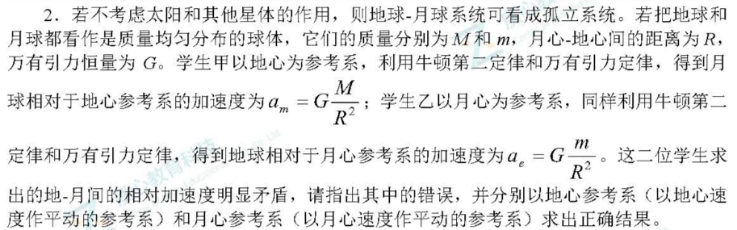
以一个运动的物体为惯性系,应该引入惯性力:
以地球为惯性系,月球所受的惯性力与月地引力相同:
以月球为惯性系同理可以算出一样的结果,与伽利略变换不矛盾.
例1
有一颗卫星做匀速圆周运动,运动周期为,线速度为,运动半径为.
若卫星法向或切向(运动同向)获得一个速度或(均小于,这样行星以椭圆轨道运动),求:
(1)
(2)若,比较的大小.
考虑机械能变化和位力定理的结合:
如果法向方向额外获得,则:
如果法向方向(与运动方向相同)额外获得,则:
显然,如果,则
例2
2018年1月31日晚,发生了超级 蓝血 月全食(blue moon)
当然,这里的蓝月亮不是洗衣液.
blue moon:一个公历月出现了第二次满月.
尾声
回头看这篇笔记，从椭圆轨道出发，绕了一大圈——
彗星掠过太阳，用面积速度算时间；
三体转动，逼出正三角形和拉格朗日点；
潮汐撕碎卫星，土星环是引力留下的残骸；
最后卫星被推一脚，轨道周期就这么变了。
这些内容表面上毫不相关，但核心都是同一个问题：在引力主导的世界里，物体倾向于做什么？
答案是：绕圈、变形、被撕碎，或者稳稳地待在拉格朗日点上——
取决于它离危险有多近。
正在加载评论…